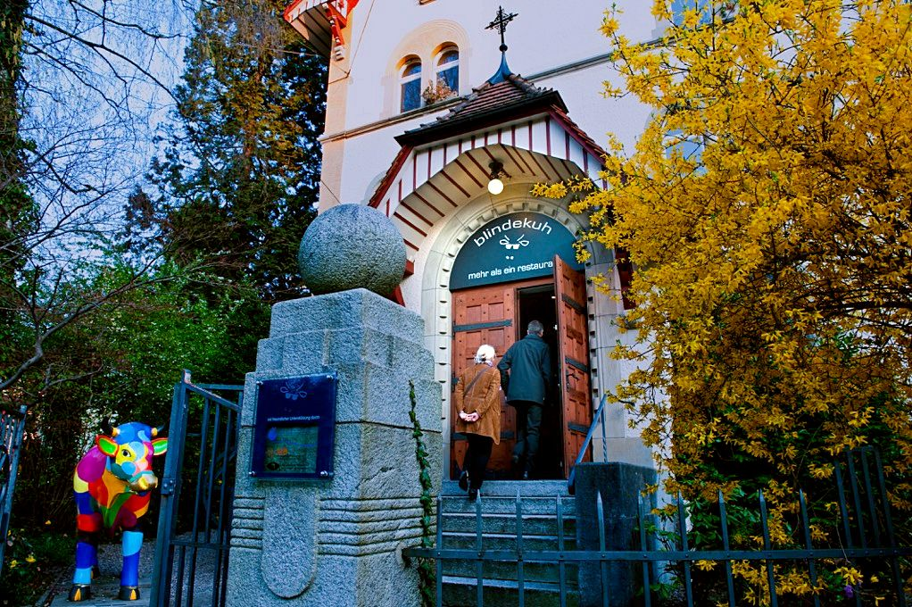

Wer in Zürich Halt macht und sich für Kirchenräume und ihre Umnutzungen interessiert, muss in der Kirche an der Mühlebachstrasse einkehren. Einkehren? Richtig, denn seit 1999 ist im ehemaligen Kirchenraum der methodistischen Kirche in Zürich, die auch Inselhof-Kapelle genannt wird, ein besonderes Restaurant eingebaut.
Das Restaurant Blinde Kuh in der ehemaligen methodistischen Kirche in Zürich. (Bild: © blindekuh. mehr als ein restaurant)
Wenn Blinde sehen
Nomen est omen: Die «Blinde Kuh» bietet 70 Gästen Platz. Im völlig abgedunkelten Raum werden sie von 30 blinden oder sehbehinderten Mitarbeitenden kulinarisch verwöhnt. Dabei machen sie im Alltag des Miteinander-Essens eine Erfahrung besonderer Art: Blinde sehen und Sehende sind blind. Dieses sozial-diakonische Projekt geht auf die Initiative des seit früher Kindheit erblindeten Pfarrers Jürg Spielmann und des sehbehinderten Psychologen Stephan Zappa zurück. Das Restaurant ist meist ausgebucht. Firmenessen, Konfirmandenausflüge wie Kirchenleitungs-Retraiten finden in der «Blinden Kuh» ihren Höhepunkt. Der Kirchenraum ermöglicht durch das Projekt einen einmaligen Perspektivenwechsel, der von Jürg Spielmann so beschrieben wird: «Für mich war von allem Anfang an wichtig, dass das Projekt ein sozial-diakonisches Projekt ist. Menschen mit einem objektiven Nachteil, nämlich ihrer Blindheit, lernen, einen kreativen Umgang mit ihrer Begrenztheit zu gewinnen. Sie erleben Zustände, wo sie über ihre Grenzen hinausgehen können und an sich Veränderungen entdecken. Solche Grenzüberschreitungen und Veränderungen sind nun nicht das Vorrecht der Blinden, sondern gehören zum Menschlichen überhaupt. Die ‹Blinde Kuh› ermöglicht grenzüberschreitende Begegnungen von Sehenden und Blinden, in denen beide sich und den andern neu und anders sehen und kennen lernen. Diese Erfahrungen sind für mich impliziter Ausdruck des Evangeliums.»
Blindes Vertrauen in sozial-diakonische Umnutzung von Kirchenräumen
Religionshistorisch bedeutsam war vor 20 Jahren die Not der methodistischen Gemeinde, dass immer weniger Mitglieder den Gottesdienst am Sonntagmorgen besuchten. Die Kirchgemeinde suchte eine neue Nutzung des Kirchenraumes. Insbesondere eine durch die diakonisch ausgerichtete Theologie ihres Gründers John Wesley geprägte sozial-diakonische Nutzung lag den Verantwortlichen am Herzen. Hauptgegenstand der kontrovers geführten Debatte war die Frage, ob zukünftig Alkohol verkauft werden darf oder nicht. Jürg Spielmann konnte die Gemeinde mit einem überraschend einsichtigen theologischen Argument für die kommerzielle Nutzung überzeugen: «Für mich lag dadurch, dass es ein Kirchenraum war, ein Segen auf dem Projekt. Nichts gegen Metzgereien. In Metzgereien werden Würste verkauft, in Kirchen breitet sich Segen aus. Der Raum artikuliert die implizite Dimension der Begegnung von Menschen über ihre Grenzen hinaus, für mich als implizite Dimension des Evangeliums verstanden, für viele Menschen nicht so oder anders genannt.» Wird das Restaurant in den Segensraum Kirche konstruiert, gewinnt die «Blinde Kuh» als professionelles und kommerzielles Unternehmen an theologischer Bedeutung: Die «Blinde Kuh» zeigt sich erstens als Gastraum, in dem sich Gäste und Gastgeber gegenseitig in einer Willkommens-Kultur begegnen. Diese Begegnung zeichnet sich durch den egalitären Charakter aus, der sich nach den Bedingungen der «Blinden» ausrichtet und grundlegend auf konvivale Solidarität angewiesen ist. Zweitens wird der umgenutzte Kirchenraum als Schutzraum erfahren, weil Sehende blind den Blinden vertrauen müssen. Die im Alltag Vulnerablen verhelfen mit ihrer Resilienz den in der Dunkelheit Vulnerablen, sich zu orientieren. Schliesslich wird der Kirchenraum zum Zwischenraum, indem sich spielerisch in der Umkehrung von «Blinden» und «Sehenden» überraschende Dimensionen von Existenz und Sinnhaftigkeit öffnen. Diese heilenden und heilsamen Erfahrungen tragen in sich das Potenzial von Sakralität und Transformation: Die sehend Blinden gewinnen ein neues «Sehen».
Neue Sichtweisen
Der Besuch der «Blinden Kuh» lohnt sich nicht nur in kulinarischer und erfahrungsbezogener Hinsicht. Das sozial-diakonische Projekt hat auch für den theologischen und praktologischen Diskurs innerhalb von Kirchgemeinden und unter den Verantwortlichen in Kirchenleitungen eine nicht zu unterschätzende Wirkung. Die Gründung von weiteren «Blinden Kühen» in Köln, Berlin, Paris, Basel, Hamburg und Moskau sowie die aktuelle Ausdehnung über den europäischen Horizont hinaus lässt die Tragweite erahnen. Durch die dramatische Nutzungsverschiebung der Besuchenden von Kirchenräumen in Städten und auch in Dörfern weg vom gottesdienstlichen Besuch am Sonntag hin zu individueller oder kollektiver Nutzung während Werk- oder Ferientagen werden neue Sichtweisen auf eine diakonische Umnutzung von Kirchenräumen freigelegt. Diese in die reformierte Tradition eingeschriebene Nutzungsform wird aktuell durch die Flüchtlingsproblematik drängend und hat in der Rosenbergkirche in Winterthur ihr Exponat: Während zweier Jahre finden im Kirchenraum 70 Asylsuchende Wohnraum. Das Projekt wird von der Stadt in Zusammenarbeit mit der Kirchgemeinde durchgeführt.
Dr. Christoph Sigrist ist Pfarrer am Grossmünster in Zürich und Privatdozent für Diakoniewissenschaft am Institut für Systematische Theologie an der Universität Bern.
Weitere Artikel von {{ author.author }} finden Sie hier:
Zur Vertiefung:
- Webseite des Restaurants Blinde Kuh, verfügbar unter: https://www.blindekuh.ch (07.02.2022).
- Sigrist, Christoph: KirchenDiakonieRaum. Untersuchungen zu einer diakonischen Nutzung von Kirchenräumen, Zürich 2014, 417–426.